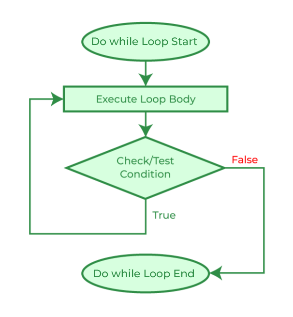

|  |
Do-while loop is similar to a while, but with the difference that the code inside is executed the first time no matter what, it does not matter if the condition is true or false. This is because the condition is checked after the instructions are executed. |
$x=0; //instruction 1
do { //loop 1
echo $x; //instruction 2
$x++; //instruction 3
} while ($x!=0); // condition 1